산림기사 (2015-05-31 기출문제)
1과목: 조림학
1. 밀식에 대한 설명으로 옳지 않은 것은?
- 간벌수입이 기대된다.
- 밀식한 임분은 줄기가 굵고 근계가 발달하여 풍해 ㆍ 설해 등 위해에 강하다.
- 제벌 및 간벌에 있어서 선목의 여유가 있어서 우량임분으로 유도할 수 있다.
- 수관의 울폐가 빨리 와서 표토의 침식과 건조를 방지하여 개벌에 의한 지력의 감퇴를 줄인다.
(정답률: 82%)

2. 버드나무류 및 사시나무류의 파종상을 제작하려고 한다. 가장 적합한 형태는?
- 저상(低床)
- 고상(高床)
- 평상(平床)
- 준고상(準高床)
(정답률: 67%)
3. 파종상 실면적 500m2, m2당 묘목잔존본수 600본, 1g당 종자평균입수 60립, 순량율 0.9, 발아율 0.9, 묘목잔존율 0.3인 경우 파종량은?
- 약 1kg
- 약 11kg
- 약 21kg
- 약 31kg
(정답률: 91%)
4. 토양수의 종류 중 pF 4.2~5.5 에 해당하여 식물의 이용이 불가능한 것은?
- 팽윤수
- 흡습수
- 중력수
- 모세관수
(정답률: 55%)
5. "Pinus densiflora for.multicaulis UYEKI" 학명에 대한 설명으로 옳지 않은 것은?
- Pinus는 속명을 나타낸다.
- densiflora는 종명을 나타낸다.
- for.multicaulis 는 변종을 나타낸다.
- UYEKI는 명명자의 이름을 나타낸다.
(정답률: 84%)
6. 음수 갱신에 가장 불리한 작업법은?
- 산벌작업
- 택벌작업
- 이단림작업
- 모수림작업
(정답률: 72%)
7. 수목종자 순량율 품질기준이 가장 높은 것은?
- 잣나무
- 굴참나무
- 박달나무
- 가문비나무
(정답률: 72%)
8. 식재밀도에 영향을 미치는 인자에 대한 설명으로 옳지 않은 것은?
- 비옥한 토양일수록 소식한다.
- 양수는 소식하고 음수는 밀식한다.
- 줄기가 자유롭게 굽는 수종은 소식한다.
- 소경재 생산이 목표일 경우에는 밀식한다.
(정답률: 69%)
9. 나자식물의 수정과정에서 나타나는 특징으로 옳지 않는 것은?
- 나자식물의 수정과정에서 특이한 것은 부계세포질유전이다.
- 수정과정에서 난세포의 소기관이 소멸되어 웅성배우체의 세포질유전이 이루어진다.
- 개화상태에서 암꽃의 배주는 난모세포를 형성하는 단계에 머물러 있으며 아직 난자를 형성하지 않고 있다.
- 한 개의 정핵은 난자와 결합하여 배를 만들고 다른 정핵은 2개의 극핵과 결합하여 배를 만드는 중복수정을 한다.
(정답률: 76%)
10. 균근에 대한 설명으로 옳은 것은?
- 산성토양에서 질소 배출을 촉진한다.
- 인산 등을 포함하여 무기양료의 흡수를 촉진한다.
- 송이버섯은 소나무와 관계가 있는 대표적인 내생균근이다.
- 외생균근은 균사가 기주식물의 세포 안으로 들어가 자란다.
(정답률: 67%)
11. 종자발아 과정에서 휴면의 원인이 아닌 것은?
- 이중휴면성
- 사이토키닌 처리
- 종피의 불투수성
- 종피의 기계적 작용
(정답률: 69%)
12. 왜림작업의 적용이 가장 용이한 수종은?
- 전나무
- 잣나무
- 일본잎갈나무
- 리기다소나무
(정답률: 55%)
13. 꽃의 구조가 열매가 되어 생성되는 구조 관계를 연결한 것으로 옳지 않은 것은?
- 난핵→배유
- 배주→종자
- 자방→열매
- 주심→내종피
(정답률: 66%)
14. 일반적으로 수목의 광합성에 유효한 광파장 영역은?
- 200nm 이하
- 200~350nm
- 400~700nm
- 750nm 이상
(정답률: 82%)
15. 풀베기작업을 두 번하고자 할 때 첫 번째 작업시기로 가장 적당한 것은?
- 1~3월
- 3~5월
- 5~7월
- 7~9월
(정답률: 82%)
16. 수목 종자의 발아를 촉진시키는데 가장 효과적으로 사용될 수 있는 물질은?
- 지베렐린
- 인돌젖산(IBA)
- 테트라졸륨(TTC)
- 아브시스산(ABA)
(정답률: 78%)
17. 내음성이 가장 높은 수종은?
- Ginkgo biloba LINN. (은행나무)
- Taxus cuspidata S. et Z. (주목)
- Juniperus rigida S. et Z. (노간주나무)
- Larix leptolepis GORDON (일본잎갈나무)
(정답률: 80%)
18. 천연림가꾸기의 간벌림 보육작업에 대한 설명으로 옳지 않은 것은?
- 1차 보육은 우세목의 평균수고가 10m이상되는 시기이다.
- 2차 보육은 우세목의 평균수고가 12~16m 사이에 실시한다.
- 유령림 단계의 마지막 보육 후 2~4년, 혹은 5~6년이 경과된 때가 적당하다.
- 상층임관을 이루고 있는 임목의 평균 나무키가 2m 내외인 임목을 제거한다.
(정답률: 73%)
19. 묘포토양의 조건으로 옳지 않은 것은?
- 토양산도가 pH 5.5~6.5인 토양
- 토심이 얕고 부식질이 많은 토양
- 사양토로 입단구조를 보이는 토양
- 배수, 통기성 등 물리적 성질이 좋은 토양
(정답률: 84%)
20. 가지치기에 대한 설명으로 옳지 않은 것은?
- 수간의 무절부분이 증가한다.
- 가지치기는 callus와 관련이 있다.
- 산불 발생시 수관화의 위험성을 경감시킨다.
- 포플러류는 생가지치기를 하면 부후위험성이 커진다.
(정답률: 62%)
2과목: 산림보호학
21. 수목을 가해하는 해충의 방제에 대한 설명으로 옳지 않은 것은?
- 성 페로몬을 이용한 방법은 친환경적 방제법이다.
- 방사선을 이용한 해충의 불임법은 국제적으로 금지되어 있다.
- 식물검역은 해충 방제법의 하나로서 공항, 항만, 국제우체국 등에서 실시한다.
- 생물적 방제는 다른 생물을 이용하여 해충군의 밀도를 억제하는 방법이다.
(정답률: 84%)
22. 잣나무 털녹병에 대한 설명으로 옳지 않은 것은?
- 중간기주는 송이풀이다.
- 담자균에 의한 병해이다.
- 1936년 가평에서 처음 발견되었다.
- 여름포자가 형성되기 전인 3월까지 중간기주를 제거해야 효과적이다.
(정답률: 65%)
23. 소나무류 잎떨림병의 방제법으로 옳지 않은 것은?
- 병든 낙엽을 모아 태운다.
- 4-4식 보르도액을 살포한다.
- 풀베기와 가지치기를 지양한다.
- 여러 종류의 활엽수를 하목으로 심는다.
(정답률: 70%)
24. 종자나 열매를 가해하는 해충이 아닌 것은?
- 솔나방
- 밤바구미
- 솔알락명나방
- 복숭아명나방
(정답률: 80%)
25. 2차 해충에 속하는 것은?
- 소나무좀
- 흰불나방
- 밤나무혹벌
- 오리나무잎벌레
(정답률: 67%)
26. 성충과 유충이 동시에 잎을 가해하는 것은?
- 박쥐나방
- 솔잎혹파리
- 복숭아명나방
- 오리나무잎벌레
(정답률: 80%)
27. 밤나무 혹벌이 주로 산란하는 곳은?
- 밤나무의 눈
- 밤나무의 뿌리
- 밤나무의 잎뒷면
- 밤나무의 주변 지피물
(정답률: 71%)
28. 전나무 잎녹병에 대한 설명으로 옳지 않은 것은?
- 중간기주는 뱀고사리이다.
- 침엽 뒷면에 흰색의 녹포자퇴가 형성된다.
- 여름포자퇴는 살아있는 잎에서 월동한다.
- 중간기주의 분포가 계곡의 습지에 한정되어 있어 대면적 발생은 예상되지 않는다.
(정답률: 48%)
29. 천연기념물이 아닌 것은?
- 무태장어
- 사향노루
- 하늘다람쥐
- 반달가슴곰
(정답률: 75%)
30. 다음 설명에 해당하는 것은?
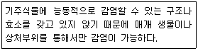
- 세균
- 선충
- 곰팡이
- 바이러스
(정답률: 65%)
31. 수목병의 대발생을 억제하기 위한 임업적 방제의 방법으로 옳지 않은 것은?
- 혼효림을 조성한다.
- 이령림을 조성한다.
- 추운 지방에서 생산된 내동성이 강한 묘목을 조림한다.
- 종자를 조림예정지와 유사한 환경을 가진 장소에 생육하는 모수에서 채취한다.
(정답률: 69%)
32. 참나무 시들음병에 대한 설명으로 옳지 않은 것은?
- 피해목의 줄기 하단부에 톱밥가루가 있다.
- 피해목은 벌채 후 밀봉하여 훈증처리 또는 소각한다.
- 피해목은 7월 말경부터 빠르게 시들면서 빨갛게 말라죽는다.
- 병원균은 Raffaelea sp. 이고 이것을 매개하는 것은 북방수염하늘소이다.
(정답률: 70%)
33. 소나무재선충병 예방 약제로 적합한 것은?
- 메탐소듐 액제
- 에마멕틴벤조에이트 유제
- 티오파네이트메틸 수화제
- 옥시테트라사이클린 수화제
(정답률: 71%)
34. 산림해충의 생물학적 방제방법은?
- 식재할 때 내충성품종을 선정한다.
- BT수화제를 이용하여 솔나방 등을 방제한다.
- 임목밀도를 조절하여 건전한 임분을 육성한다.
- 생리활성물질인 키틴합성억제제를 이용하여 산림해충을 방제한다.
(정답률: 68%)
35. 온실효과를 일으키는 가스가 아닌 것은?
- CH4
- N2O
- SO4
- CFCs
(정답률: 61%)
36. 내화력이 강한 수종은?
- 녹나무
- 소나무
- 사철나무
- 아까시나무
(정답률: 64%)
37. 미국흰불나방이 월동하는 형태는?
- 알
- 유충
- 성충
- 번데기
(정답률: 80%)
38. 수목병 중에서 원인이 다른 것은?
- 뽕나무 오갈병
- 벚나무 빗자루병
- 대추나무 빗자루병
- 오동나무 빗자루병
(정답률: 87%)
39. 바이러스 감염에 의한 수목병의 대표적인 병징으로 옳지 않은 것은?
- 위축
- 그을음
- 잎말림
- 얼룩무늬
(정답률: 67%)
40. 다음 설명에 해당하는 살충제는?
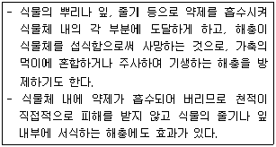
- 소화중독제
- 접촉살충제
- 화학불임제
- 침투성살충제
(정답률: 82%)
3과목: 임업경영학
41. 산림 표본조사 방법으로 옳지 않은 것은?
- 층화추출법
- 부차적추출법
- 계통적 추출법
- 복합무작위 추출법
(정답률: 64%)
42. 시범림의 종류가 아닌 것은?
- 조림성공 시범림
- 산림교육 시범림
- 숲가꾸기 시범림
- 복합경영 시범림
(정답률: 58%)
43. 윤벌기 30년이고 작업급의 면적이 120ha인 일본잎갈나무림의 법정축적을 벌기수확에 의한 방법으로 계산하면?
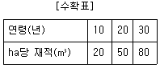
- 3000 m3
- 4200 m3
- 4800 m3
- 6000 m3
(정답률: 50%)
44. 임지기망가의 기본 공식이 되는 것은?(단, R : 수익에 대한 전가, C : 비용에 대한 전가, n : 벌기연수, p : 이율)
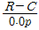
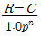
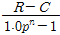
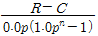
(정답률: 74%)
45. 임령 표시 방법에서
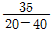
일 때, 35가 의미하는 것은?- 임분의 벌기령
- 임분의 최소 임령
- 임분의 평균 임령
- 임분의 최대 임령
(정답률: 76%)
46. 예정된 원가와 실제로 발생한 원가 사이의 차이점, 원인, 원인 제거를 위한 조치 등을 검토하는 것은?
- 원가통제
- 원가계산
- 원가비교
- 원가실행
(정답률: 67%)
47. 손익분기점의 분석을 위한 가정으로 옳지 않은 것은?
- 제품의 판매가격은 변함이 없다.
- 원가는 고정비와 변동비로 구분할 수 있다.
- 제품의 생산능률은 판매량의 변동에 따라서 변한다.
- 생산량과 판매량은 항상 같으며, 생산과 판매에 동시성이 있다.
(정답률: 80%)
48. 다음 조건에서 소나무림의 임목가는?
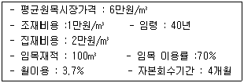
- 약 156만원
- 약 210만원
- 약 226만원
- 약 296만원
(정답률: 46%)
49. 말구직경자승법으로 통나무의 직경을 측정하는 방법으로 옳은 것은?
- 수피를 제외한 길이 검척 내의 최대 직경으로 한다.
- 수피를 포함한 길이 검척 내의 최소 직경으로 한다.
- 수피를 포함한 길이 검척 내의 최대 직경으로 한다.
- 수피를 제외한 길이 검척 내의 최소 직경으로 한다.
(정답률: 65%)
50. 자연휴양림의 지정을 해제할 수 있는 경우가 아닌 것은?
- 자연휴양림의 지정을 받은 자가 지정해제 또는 변경을 요청하는 경우
- 정당한 사유 없이 승인을 받은 계획의 내용대로 사업을 이행하지 않은 경우
- 공공사업의 시행 등으로 인하여 지정목적을 달성할 수 없거나 지적구역의 변경이 필요한 경우
- 천재지변 등으로 인한 피해로 산림의 임상면적 등이 타당성 평가 기준에 적합하지 아니하게 된 경우
(정답률: 67%)
51. 형수(form factor)의 설명으로 옳지 않은 것은?
- 정형수는 흉고직경을 기준으로 한다.
- 절대형수는 수간 최하부의 직경을 기준으로 한다.
- 지하고가 높고 수관량이 적은 나무일수록 흉고형수가 크다.
- 일반적으로 지위가 양호할수록 흉고형수는 작은 경향이 있다.
(정답률: 64%)
52. 유동자본에 해당하지 않은 것은?
- 묘목비
- 보험료
- 운반비
- 벌목기구
(정답률: 80%)
53. 자연휴양림의 지정을 위한 타당성평가 기준으로 국가 및 지방자치단체 이외의 자가 자연휴양림을 조성하려는 겨우 최소의 산림 면적은?(단, 도서지역이 아님)
- 10ha
- 20ha
- 30ha
- 40ha
(정답률: 53%)
54. 다음 조건에서 클리노메터를 이용한 입목의 수고 측정값은?
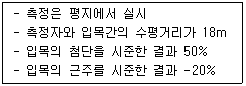
- 5.4m
- 8.6m
- 10.4m
- 12.6m
(정답률: 52%)
55. 육림비의 절감방법으로 옳지 않은 것은?
- 낮은 이자율의 자본을 이용한다.
- 투입한 자본의 회수기간을 짧게 한다.
- 노임을 절약할 수 있는 방법을 찾는다.
- 중간부수입(간벌수입 등)은 최소화한다.
(정답률: 81%)
56. "산림교육의 활성화에 관한 법률 시행령"에 따라 숲길체험지도사를 배치하지 않아도 되는 시설은?
- 자연공원
- 국립공원
- 산림욕장
- 자연휴양림
(정답률: 68%)
57. GIS자료 관리 기능 중 공간분석에 대한 설명으로 옳은 것은?
- 버퍼는 점, 선, 면 중 2개의 객체 요소에 대해서 적용한다.
- 확산기능은 관심 대상지역을 지정한 범위만큼 도출하는 것이다.
- 근접분석은 특정 위치를 에워싸고 있는 주변 지역의 특성을 추출하는 것이다.
- 네트워크분석은 일정한 지점을 중심으로 일정한 방향으로 넓혀가는 것을 뜻한다.
(정답률: 59%)
58. 한 가지 방안의 선택 때문에 다른 방안을 선택할 수 없어서 포기한 수익은?
- 기회원가
- 매몰원가
- 한계원가
- 증분원가
(정답률: 82%)
59. 평가하려는 임목과 비슷한 조건과 성질을 가지는 임목의 실제의 거래 시세로 가격을 결정하는 임목 평가방법은?
- 임목매매가
- 임목기망가
- 법정축적가
- 임목비용가
(정답률: 77%)
60. 다음 조건에 따라 연수합계법으로 계산된 제6년도 감가상각비는?
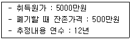
- 약346만원
- 약 404만원
- 약 449만원
- 약 900만원
(정답률: 47%)
4과목: 임도공학
61. 임도에서 너비에 대한 설명으로 옳지 않은 것은?
- 곡선부에서는 곡선 반경에 따라 너비를 확대하여야 한다.
- 길어깨 및 옆도랑의 너비는 각각 1~2m의 범위로 한다.
- 유효너비는 길어깨 및 옆도랑의 너비를 제외하여 3m를 기준으로 한다.
- 임도의 축조한계는 유효너비에서 길어깨를 포함한 규격에 따라 설치한다.
(정답률: 60%)
62. 옹벽의 종류 중 형식에 의한 분류가 아닌 것은?
- L자형 옹벽
- 중력식 옹벽
- 부벽식 옹벽
- 콘크리트 옹벽
(정답률: 71%)
63. 임도 설계도에서 평면도상에 표기하지 않아도 되는 것은?
- 물매
- 교각
- 측점번호
- 임시기표
(정답률: 59%)
64. 흙일(토공)의 균형을 얻기 위해 작성되는 곡선은?
- 토질곡선
- 종단곡선
- 유토곡선
- 토압곡선
(정답률: 58%)
65. 임도망 배치의 효율성 정도를 나타내는 개발지수에 대한 설명으로 틀린 것은?
- 균일하게 임도가 배치되었을 때 개발지수는 1.0이다.
- 노선이 중첩되면 될수록 임도배치 효율성은 높아진다.
- 개발지수의 산출식은 (평균집재거리 x 임도밀도)/2500이다.
- 개발지수가 1보다 크거나 작을수록 임도배치 효율은 불균일 생태가 된다.
(정답률: 71%)
66. 고저측량 기고식 야장기입에서 기준으로 되는 기계고는?
- 그 점의 지반고(G.H) + 그 점의 전시(F.S)
- 그 점의 기계고(I.H) + 그 점의 후시(F.S)
- 그 점의 지반고(G.H) + 그 점의 후시(B.S)
- 그 점의 기계고(I.H) + 그 점의 후시(B.S)
(정답률: 65%)
67. 임도설계시 흙량(토적)산출 방법으로 옳은 것은?
- 종단면도만 있으면 충분하다.
- 횡단면도만 있으면 충분하다.
- 횡단면도와 평면도가 있어야 한다.
- 종단면도와 횡단면도가 있어야 한다.
(정답률: 78%)
68. 임도의 노면침하를 방지하기 위하여 저습지대에 시설하는 것은?
- 토사도
- 사리도
- 쇄석도
- 통나무길
(정답률: 84%)
69. 기계경비의 직접경비 중 기계 손실료의 구성으로 옳은 것은?
- 감가상각비 + 정비비 + 관리비
- 연료유지비 + 운전노무비 + 조림해체비
- 감가상각비 + 운전노무비 + 소모성 부품비
- 운전노무비 + 연료유지비 + 소모성 부품비
(정답률: 64%)
70. 집재용 도구가 아닌 것은?
- 쐐기
- 사피
- 피비
- 켄트훅
(정답률: 73%)
71. 임도시공 현장에서의 안전사고 대책으로 옳지 않은 것은?
- 작업장의 정리정돈은 작업의 편의를 위하여 작업상태 그대로 둘 것
- 노무자에게 작업목적과 시공상의 문제점에 대하여 충분히 숙지시킬 것
- 시공기계 기종이 선정되면 사용 전ㆍ후에 여러 가지 안전대책을 강구할 것
- 기계화 시공에는 여러 가지 재해가 발생할 위험이 있으므로 안전대책을 마련할 것
(정답률: 86%)
72. 흙의 입경분포곡선에서 D10=0.04mm, D30=0.06mm, D60=0.14mm였다면 균등계수는?
- 0.67
- 0.42
- 2.3
- 3.5
(정답률: 63%)
73. 트래버스의 종류가 아닌 것은?
- 결합 트래버스
- 개방 트래버스
- 방위 트래버스
- 폐합 트래버스
(정답률: 69%)
74. 1/25,000 지형도에서 임도의 종단물매 10%의 노선을 긋고자 한다. 등고선간의 도상거리를 얼마로 해야 하는가?
- 4mm
- 5mmm
- 6mm
- 7mm
(정답률: 54%)
75. 아스팔트 포장과 비교하였을 때 시멘트 콘크리트 포장의 장점으로 옳은 것은?
- 평탄성이 좋다.
- 내마모성이 크다.
- 시공속도가 빠르다
- 간단 공법으로 유지수선이 가능하다.
(정답률: 79%)
76. 직접 수준 측량에서 어떤 한 지점의 표고만을 알기 위하여 전시(F.S)만을 취하는 점은?
- 전환점(T.P)
- 후시점(B.S)
- 중간점(I.P)
- 수준점(B.M)
(정답률: 61%)
77. 흙일에 있어 자연상태의 토양을 깎으면 토량이 늘어나게 되는데 다음 중 토량의 변화가 가장 큰 것은?
- 모래
- 경암
- 역질토
- 점성토
(정답률: 56%)
78. 다음과 같은 폐합다각측량 성과표를 이용하여 측점 D의 좌표를 구한 값 중 옳은 것은?(단, A점의 좌표는 0,0 이고, 위ㆍ경거의 오차는 없는 것으로 한다.)
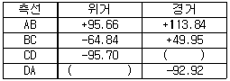
- (+64.88, +70.87)
- (-64.88, +70.87)
- (+64.88, -70.87)
- (-64.88, -70.87)
(정답률: 68%)
79. 곡선 편각법에 의한 곡선 설치를 하고자 한다. 반지름 50m 의 원곡선에서 시단현 5m에 대한 편각은?
- 2°43′
- 2°52′
- 5°36
- 5°44′
(정답률: 46%)
80. 식생이 사면 안정에 미치는 효과가 아닌 것은?
- 표토층 침식방지
- 심층부 붕괴방지
- 강우 및 바람에 의한 토양 유실 방지
- 급경사지에서 수목 자체 무게로 인한 토양 안정
(정답률: 78%)
5과목: 사방공학
81. 비탈면 안정공법이 아닌 것은?
- 돌쌓기 공법
- 새심기 공법
- 힘줄박기 공법
- 격자틀붙이기 공법
(정답률: 74%)
82. 흙쌓기 비탈면에서 토질에 따라 적용 가능한 사방공법으로 옳지 않은 것은?
- 모래층 비탈면은 피복토를 객토하지 않고 녹화한다.
- 용출수가 있는 비탈면은 돌망태공법 등을 적용한다.
- 자갈이 많은 비탈면은 객토로 피복한 후에 식생공법을 적용한다.
- 점토 비탈면은 점성이 약한 사면에서는 복토없이 식생공법을 이용할 수 있다.
(정답률: 62%)
83. 흙사방댐의 높이가 2.5m일 때에 적당한 댐마루 나비는? (단, Merrimar식 이용)
- 1m
- 1.5m
- 2m
- 2.5m
(정답률: 56%)
84. 산복 비탈다듬기 공사 요령으로 옳은 것은?
- 속도랑 공사는 비탈다듬기를 완료한 후에 시공한다.
- 붕괴면 주변의 상부는 최소한 끊어내도록 설계한다.
- 비탈다듬기는 산 아래부터 시작하여 산꼭대기로 진행한다.
- 비탈다듬기로 인한 뜬 흙을 계곡부에 쌓는 곳에 땅속흙막이를 설계한다.
(정답률: 63%)
85. 산사태 복구시 산비탈수로에 대한 설명으로 옳지 않은 것은?
- 콘크리트수로는 현장에서 콘크리트를 쳐서 시공한다.
- 떼붙임수로는 기울기가 급하고 집수량이 많은 곳에 이용된다.
- 콘크리트블록수로는 여러 가지 단면을 갖도록 미리 만들어진 제품에 의해 축설한다.
- 메붙임수로는 막깬돌, 호박돌 등을 붙여 축설하는 것으로 유량이 적고 기울기가 급한 곳에 이용된다.
(정답률: 69%)
86. 황폐산지를 복구 녹화하기 위한 산복사방 공작물의 주요 공종이 아닌 것은?
- 기슭막이
- 비탈흙막이
- 돌수로내기
- 선떼붙이기
(정답률: 61%)
87. 콘크리트 양생시 가마니 덮기와 물뿌리기 등을 일정 기간 계속해 주어야 하는 이유는?
- 시멘트가 골재 사이로 침투되어 공극을 없애기 위해
- 콘크리트 표면이 고르게 응결되어 미적 효과를 높이기 위해
- 물과 시멘트와의 수화작용을 높여 콘크리트 강도를 높이기 위해
- 시멘트와 골재와의 혼합이 잘 되도록 하여 콘크리트 강도를 높이기 위해
(정답률: 77%)
88. Bazin의 평균유속 신공식
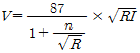
에서 n의 값이 1.75인 수로 상태는?- 야면석을 쌓은 수로
- 다듬돌을 쌓은 수로
- 시멘트를 바른 수로
- 큰 자갈 및 수초가 많은 흙수로
(정답률: 68%)
89. 돌쌓기의 시공요령으로 옳지 않은 것은?
- 돌쌓기는 세로줄눈이 일직선이 되는 통줄눈이 좋다.
- 메쌓기의 기울기는 1:0.3을 기준으로 하여 돌을 쌓는다.
- 찰쌓기를 할 때는 물빼기 구멍을 반드시 설치하여야 한다.
- 돌의 배치는 다섯에움 이상 일곱에움 이하가 되도록 한다.
(정답률: 62%)
90. 정사울세우기에 대한 설명으로 옳지 않은 것은?
- 정사울타리의 높이는 60~70cm를 표준으로 한다.
- 정사울타리는 20cm정도를 모래 속에 묻어야 한다.
- 직사각형의 정사울타리는 긴 변을 주풍방향에 직각이 되도록 한다.
- 시공효과를 크게 하기 위해 정사각형이나 직사각형으로 구획한다.
(정답률: 71%)
91. 사방댐의 시공요령으로 옳지 않은 것은?
- 방수로 양옆의 기울기는 1:1이 표준이다.
- 계상의 양안에 암반이 있는 지역이 시공적지이다.
- 찰쌓기(측벽)을 할 때 3m2당 1개의 물빼기 구멍을 설치한다.
- 계획 기울기는 현재 계상기울기의 2/3~4/5를 표준으로 한다.
(정답률: 62%)
92. 『사방사업의 설계ㆍ시공기준』의 사방사업 기준에서 산사태가 발생한 산지의 2차 붕괴침식 또는 토석의 유출을 방지하고 새로운 식생을 정착시키기 위하여 시행하는 사업은?
- 산지복원사업
- 산지보전사업
- 산사태복구사업
- 산사태예방사업
(정답률: 67%)
93. 유역면적 200ha, 최대시우량 100mm/h, 유거계수 0.6일 때, 최대홍수유량(m3/s)은?
- 5.5
- 9.2
- 33
- 60
(정답률: 74%)
94. 황폐계류에 대한 설명으로 옳지 않은 것은?
- 유량의 변화가 적다.
- 계류의 기울기가 급하다.
- 유로의 길이가 비교적 짧다.
- 호우 시에 사력의 유송이 심하다.
(정답률: 76%)
95. 돌쌓기 방법에 어긋나게 시공된 것으로 돌의 접촉부가 맞지 안거나 힘을 받지 못하는 불안정한 돌은?
- 선돌
- 금기돌
- 뾰족돌
- 괴임돌
(정답률: 68%)
96. 해풍에 의한 비사를 억류하고 퇴적시켜서 모래언덕을 조성할 목적으로 시공하는 것은?
- 모래덮기
- 모래막이
- 퇴사울세우기
- 정사울세우기
(정답률: 75%)
97. 누구침식에 대한 설명으로 옳은 것은?
- 가벼운 흙입자 및 유기물이 유실된다.
- 침식의 규모가 작아 경운작업으로 쉽게 제거된다.
- 빗방울이 땅에 떨어져 지표의 토양을 타격하고 분산시킨다.
- 산지침식 중에서 대형은 깊이가 2m이상, 나비가 5m이상이 된다.
(정답률: 55%)
98. 계상의 침식을 방지하는 계간사방 공작물로서 일반적으로 높이가 3m이하로 시공하는 것은?
- 흙막이
- 사방댐
- 누구막이
- 바닥막이
(정답률: 50%)
99. 산지의 침식형태 중에서 중력에 의한 침식으로 옳지 않은 것은?
- 산붕
- 포락
- 산사태
- 사구침식
(정답률: 79%)
100. 계류에 반수면만을 축설하여 계상기울기를 완화하고 산각을 고정하며, 토사유출을 방지하기 위한 횡공작물은?
- 수제
- 골막이
- 흙막이
- 산비탈수로
(정답률: 74%)